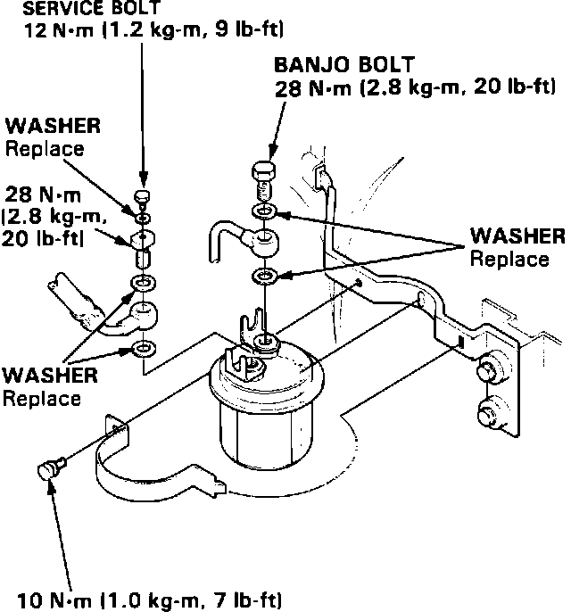

Fuel Filter: Service and Repair
Fuel Filter Replacement:

1. Place a shop towel under and around the filter.
2. Loosen the service bolt slowly to relieve pressure.
3. Remove the 12 mm banjo bolt and the fuel feed pipe from the filter.
4. Remove the fuel filter clamp and the fuel filter.
5. Re-assemble in reverse order using NEW washers.
6. Tighten as follows:
SERVICE BOLT; 9 ft.lb.(1.2 kg-m)
BANJO BOLTS; 20 ft.lb.(2.8 kg-m)
BRACKET CLAMP; 7 ft.lb.(1.0 kg-m)
7. Start the engine and recheck for leaks.